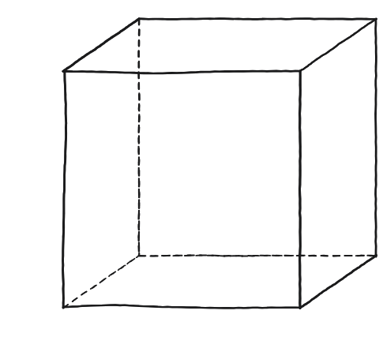
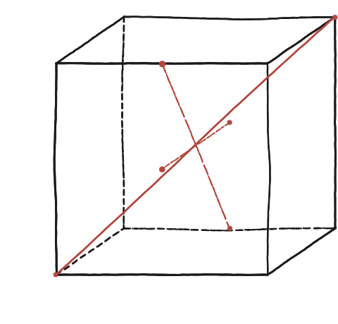
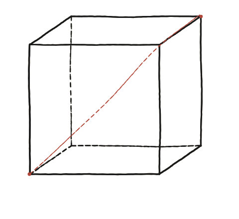

Quins són tots els poliedres simètrics?

"Simètric" és ambigu si no s'acota
Un poliedre pot tenir moltes menes de simetria —reflexió en un pla, gir al voltant d'un eix, simetria puntual. Aquesta pregunta es refereix al grau més alt possible de simetria: aquells poliedres on totes les cares són el mateix polígon regular, i tots els vèrtexs tenen exactament el mateix aspecte al seu voltant. Cal fixar aquesta definició abans de continuar, perquè si es relaxa apareixen moltes més figures possibles.
Comença pel cas que ja es coneix bé
El cub és l'exemple més familiar: sis cares quadrades, tres arestes a cada vèrtex. Té, entre altres, tres tipus d'eix de simetria: eixos que passen per parells de vèrtexs oposats (la diagonal principal del cub), eixos que passen pel centre de cares oposades, i eixos que passen pel punt mitjà d'arestes oposades. Identificar-los tots en aquest sòlid conegut dona el vocabulari necessari per parlar-ne en general.

La construcció
La diagonal sanguina uneix dos vèrtexs oposats del cub —un dels seus eixos de simetria de rotació: un gir de 120° al voltant d'aquest eix porta el cub exactament sobre ell mateix.

Tancar-ho
Cal fixar-se que no tot poliedre amb totes les cares iguals és "simètric" en aquest sentit fort: cal, a més, que tots els vèrtexs siguin equivalents entre ells. Aquesta doble condició —cares regulars i totes iguals, vèrtexs tots equivalents— és exactament la que defineix els poliedres regulars.
Els poliedres amb el grau més alt de simetria són aquells amb totes les cares el mateix polígon regular i tots els vèrtexs equivalents entre ells —la mateixa condició, doble, que defineix els poliedres regulars.
Comprovació
Compta, per al cub, quants eixos de simetria de cada tipus té: 4 eixos vèrtex-a-vèrtex, 3 eixos cara-a-cara, 6 eixos aresta-a-aresta —13 eixos en total, sense comptar el centre com a eix. Aquest recompte, combinat amb els girs que cada eix permet, dona les 24 maneres de girar el cub deixant-lo exactament on era. Compte amb dir-ne "totes les simetries": si a més s'hi compten les de mirall (reflexions), en surten 48. Les 24 són les que es poden fer sense aixecar el cub de la taula.